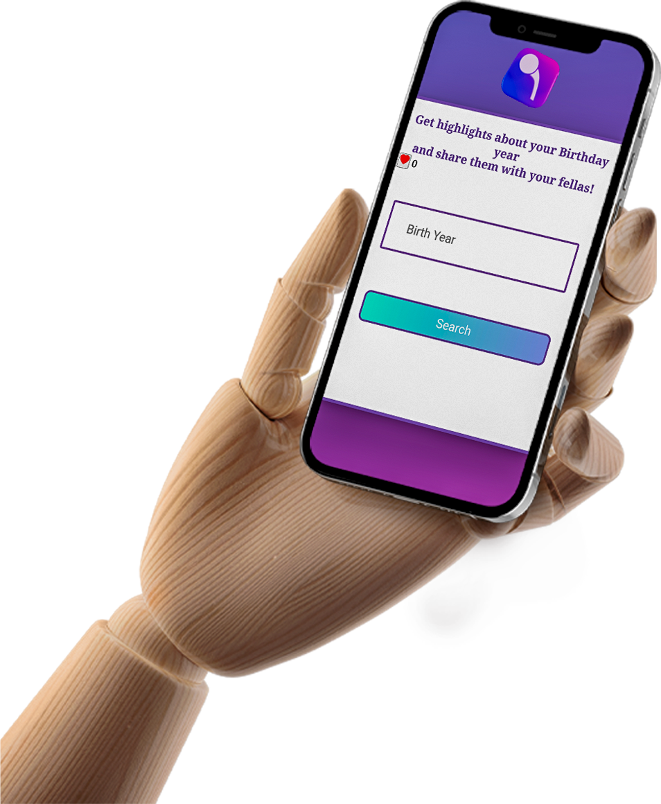
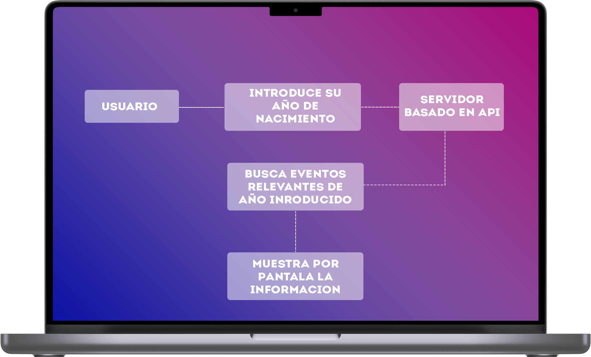

PROJECT 360

SOBRE NOSOTROS
Saber cual es nuestro lugar en el mundo siempre despierta curiosidad. Hay tantos datos disponibles que no hace falta tirar de horóscopo ni cartas astrales para conocer más datos de uno mismo según su día de nacimiento. Tan solo con un día, un mes y un año, la red es capaz de obtener toda la informacion que ha pasado en tu año de nacimiento!
DIAGRAMA DE PROCESO

DIAGRAMA DE USO

DIAGRAMA FISICO
Usuario: Representa a la persona que accede a la pagina web a traves de un navegador web en su dispositivo cliente
Navegador Web: Representa el software que utiliza el usuario para acceder a la página web.
Servidor Web: Representa el hardware y software que aloja y ejecuta la pagina web.
Base de Datos API: Representa el almacenamiento de los eventos historicos relevantes utilizados por el sistema para mostrar los resultados al usuario.